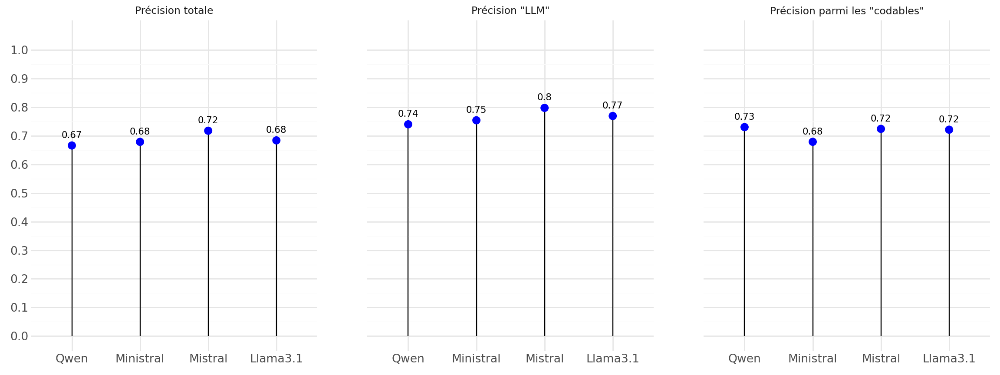
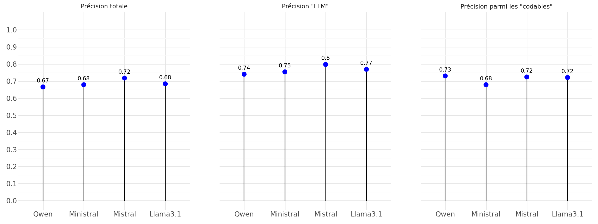
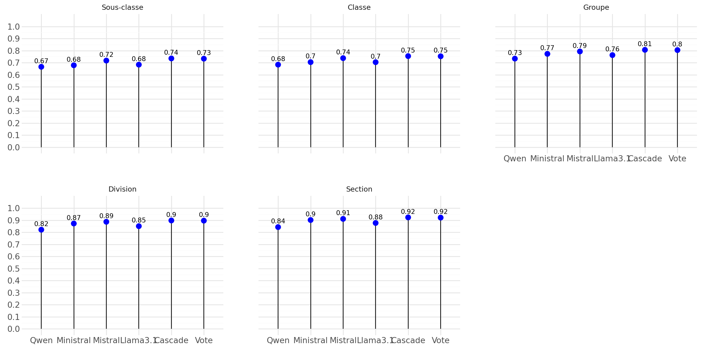
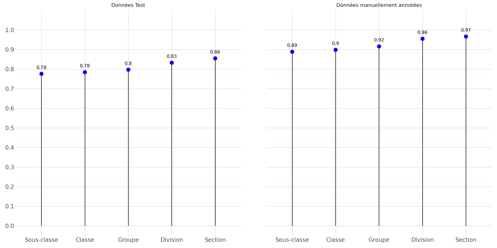

Groupe de veille Codification Automatique n°9
6 novembre 2024
Quality Assurance Framework of the European Statistical System
Source data, integrated data, intermediate results and statistical outputs must be regularly assessed and validated.
| 1-to-N | # occurence |
|---|---|
| 2 | 109 |
| 3 | 30 |
| 4 | 24 |
| 5 | 6 |
| 6 | 4 |
| 8 | 1 |
| 9 | 2 |
| 21 | 1 |
| 27 | 1 |
| 36 | 1 |
| 38 | 2 |
Aujourd’hui, \(~27k\) données annotées… insuffisant !
Retrieval Augmented Generation (RAG) vs fine-tunning
2 possibilités :
üí° Id√©e g√©n√©rale ‚û°Ô∏è Fournir les donn√©es essentielles au LLM pour convertir les codes NAF 2008 vers 2025
Avertissement
L’idée n’est pas de construire un classifier, seulement créer des annotations.
Prompt système identique pour toutes les observations
Afficher le prompt sytème
Tu es un expert de la Nomenclature statistique des Activités économiques dans la Communauté Européenne (NACE). Tu es chargé de réaliser le changement de nomenclature. Ta mission consiste à attribuer un code NACE 2025 à une entreprise, en t'appuyant sur le descriptif de son activité et à partir d'une liste de codes proposés (identifiée à partir de son code NACE 2008 existant). Voici les instructions à suivre :
1. Analyse la description de l'activité principale de l'entreprise et le code NACE 2008 fourni par l'utilisateur.
2. À partir de la liste des codes NACE 2025 disponible, identifie la catégorie la plus appropriée qui correspond à l'activité principale de l'entreprise.
3. Retourne le code NACE 2025 au format JSON comme spécifié par l'utilisateur. Si la description de l'activité de l'entreprise n'est pas suffisamment précise pour identifier un code NACE 2025 adéquat, retourne `null` dans le JSON.
4. Évalue la cohérence entre le code NACE 2008 fourni et la description de l'activité de l'entreprise. Si le code NACE 2008 ne semble pas correspondre à cette description, retourne `False` dans le champ `nace08_valid` du JSON. Note que si tu arrives à classer la description de l'activité de l'entreprise dans un code NACE 2025, le champ `nace08_valid` devrait `True`, sinon il y a incohérence.
5. Réponds seulement avec le JSON complété aucune autres information ne doit être retourné.Un prompt spécifique pour chaque observations comprenant :
Une instruction sur le format de réponse attendu
| Modèle | Taille | Vitesse d’inférence | Performance | Caractéristique |
|---|---|---|---|---|
| Qwen 2.5 | 32B | Lent | Bonnes performances | Très restrictif |
| Ministral | 8B | Extrêmement rapide | Très raisonnable | Pas restrictif |
| Mistal Small | 44B | Lent | Bonnes performances | Assez restrictif |
| Llama 3.1 | 70B (quantisé) | Extrêmement lent | Très bonnes performances | Assez restrictif |
❓ Question cruciale :
Utilisation des \(27k\) annotations comme ground truth ü•á
3 métriques de performances :



viewof activite = Inputs.text(
{label: '', value: 'coiffeur', width: 800}
)
viewof type_form = Inputs.text(
{label: 'Type de la liasse', value: 'X', width: 80}
)
urlApe = `https://codification-ape-dev.lab.sspcloud.fr/predict?description_activity=${activite}%20&type_form=${type_form}&event=01P&nb_echos_max=3&prob_min=0.0009`
d3.json(urlApe).then( res => {
var IC, results;
( {IC, ...results} = res )
IC = parseFloat(IC)
const rows = Object.values(results).map( obj => {
return `
<tr>
<td>${obj.code} | ${obj.libelle}</td>
<td>${obj.probabilite.toFixed(3)}</td>
</tr>
`
}).join('')
return html`
<table>
<caption>
Indice de confiance : ${IC.toFixed(3)}
</caption>
<tr>
<th style="text-align:center;">Libellé (NAF 2025)</th>
<th>Probabilité</th>
</tr>
${rows}
</table>`
})